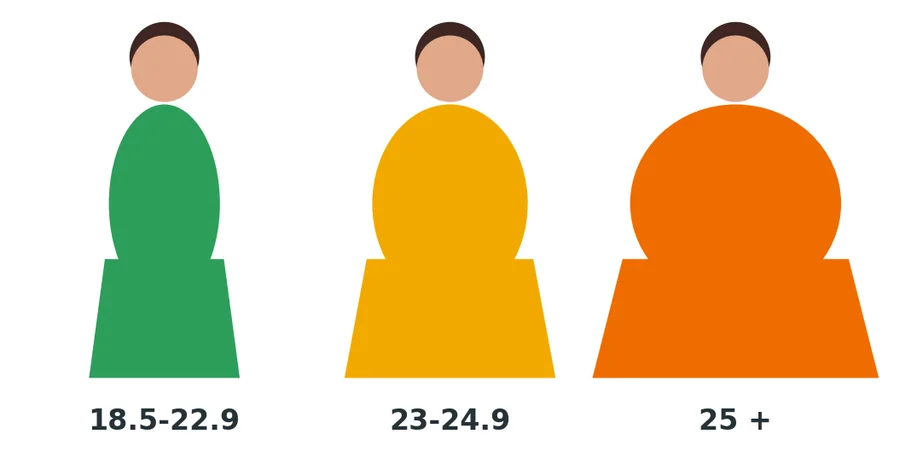
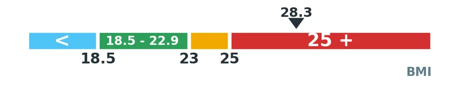
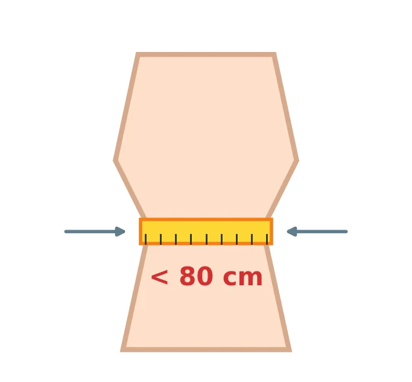
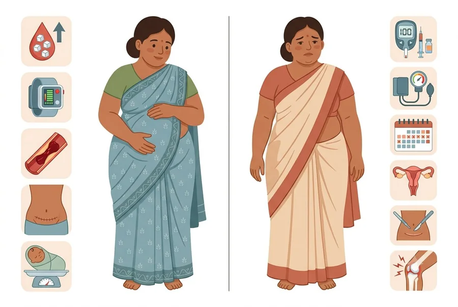
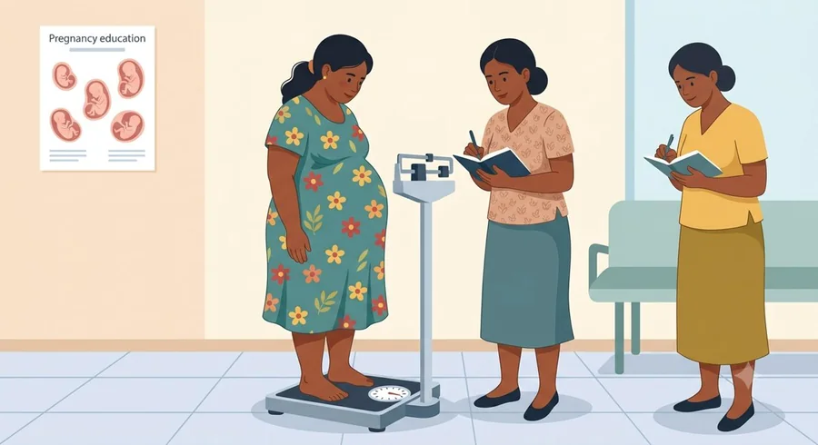
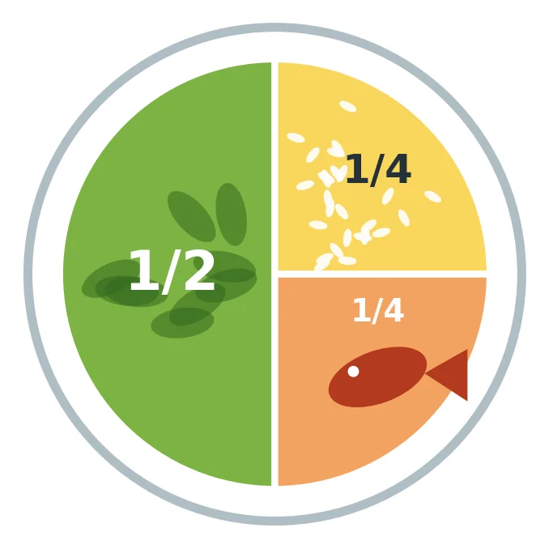
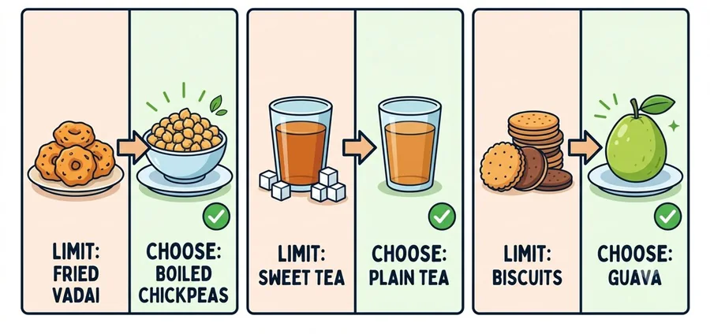
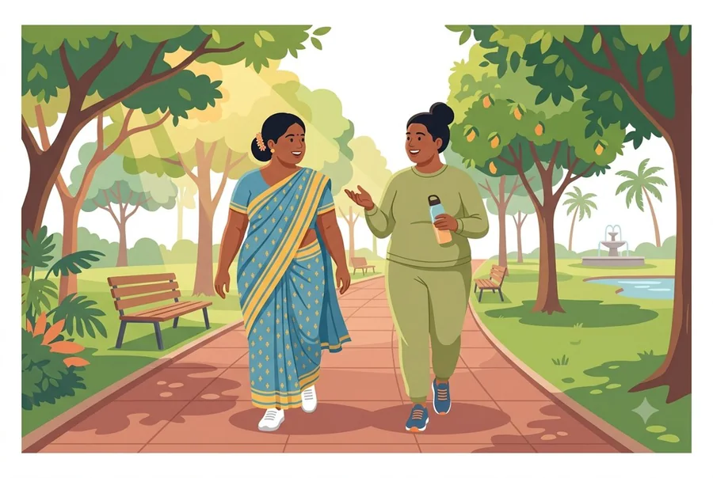
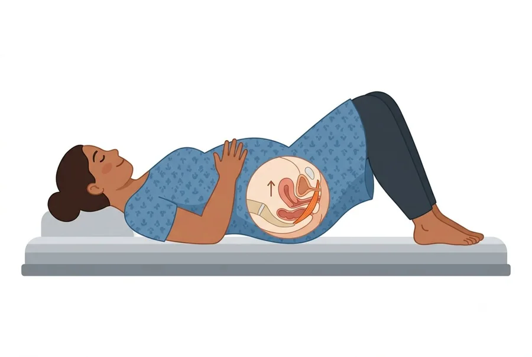
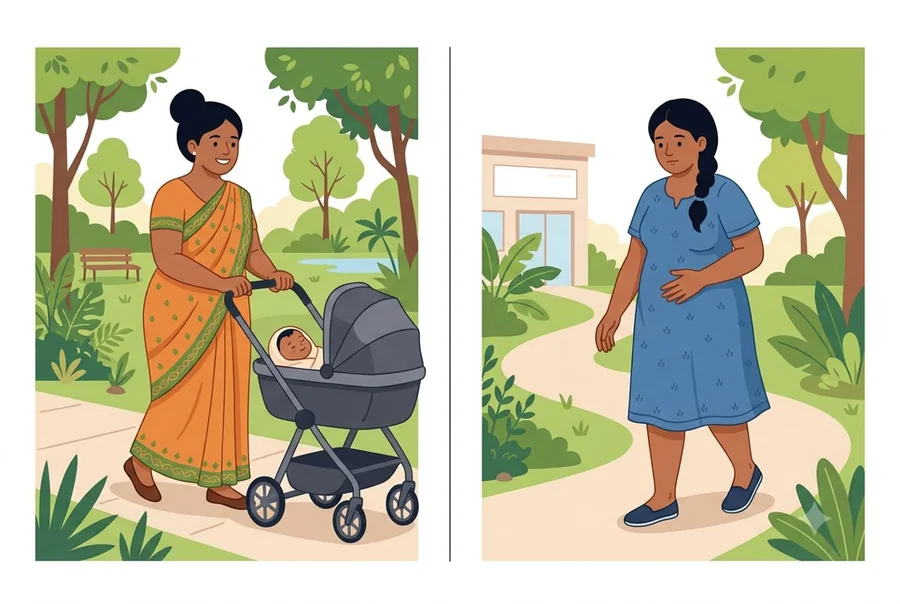

O-01All women
තරබාරුකම යනු කුමක්ද? (සියලුදෙනා)
உடல் பருமன் என்றால் என்ன? (எல்லோரும்)
- ඔබේ සෞඛ්යයට වඩා වැඩි ශරීර මේදයක් තිබීමයි.
- BMI සහ ඉඟටියේ වට ප්රමාණයෙන් මනිනු ලැබේ.
- දකුණු ආසියානු කාන්තාවන්ට අඩු BMI අගයකදී සෞඛ්ය ගැටලු ඇති වන බැවින් ආසියානු සීමාවන් භාවිතා කෙරේ.
- உங்கள் ஆரோக்கியத்திற்குத் தேவைக்கு அதிகமான உடல் கொழுப்பு இருப்பது.
- BMI மற்றும் இடுப்பளவால் அளக்கப்படும்.
- தென்னாசியப் பெண்களுக்குக் குறைவான BMI இலேயே உடல்நலப் பிரச்சினைகள் தொடங்குவதால் ஆசிய எல்லைகள் பயன்படுத்தப்படுகின்றன.

O-02All women
ඔබේ BMI (සියලුදෙනා)
உங்கள் BMI (எல்லோரும்)
BMI = බර (kg) / උස (m) / උස (m). උදාහරණය: 68 kg, 1.55 m: 68 / 1.55 / 1.55 = 28.3.
| BMI | කාණ්ඩය (ආසියානු සීමාවන්) |
|---|---|
| 5 ට අඩු | අඩු බර |
| 5 සිට 22.9 දක්වා | නිරෝගී |
| 23 සිට 24.9 දක්වා | අධි බර |
| 25 හෝ ඊට වැඩි | තරබාරු |
- කාන්තාවන්ගේ ඉඟටිය සෙන්ටිමීටර 80 හෝ ඊට වැඩි නම් අවදානම වැඩිය. (ගර්භණීභාවයේදී නොමැනේ.)
- ගර්භණීභාවයේදී BMI ගණනය කරන්නේ ඔබේ පළමු පැමිණීමේ බරෙනි.
BMI = எடை (kg) / உயரம் (m) / உயரம் (m). எடுத்துக்காட்டு: 68 kg, 1.55 m: 68 / 1.55 / 1.55 = 28.3.
| BMI | வகை (ஆசிய எல்லைகள்) |
|---|---|
| 5 க்குக் குறைவு | எடை குறைவு |
| 5 முதல் 22.9 வரை | ஆரோக்கியம் |
| 23 முதல் 24.9 வரை | அதிக எடை |
| 25 அல்லது அதற்கு மேல் | உடல் பருமன் |
- பெண்களுக்கு இடுப்பளவு 80 செ.மீ. அல்லது அதற்கு மேல் இருந்தால் ஆபத்து அதிகம். (கர்ப்பத்தில் அளக்கப்படுவதில்லை.)
- கர்ப்பத்தில், BMI உங்கள் முதல் வருகையின் எடையிலிருந்து கணக்கிடப்படுகிறது.


O-03All women
බර වැදගත් වන්නේ ඇයි (සියලුදෙනා)
எடை ஏன் முக்கியம் (எல்லோரும்)
| ගර්භනී | ගර්භනී නොවන |
|---|---|
| ගර්භනී දියවැඩියාව | දියවැඩියාව සහ අධි රුධිර පීඩනය |
| අධි රුධිර පීඩනය සහ ප්රී-එක්ලැම්ප්සියා | අක්රමවත් ඔසප්, PMOS, ගැබ් ගැනීමේ අපහසුව |
| රුධිර කැටි ගැසීම | ගර්භාෂ අභ්යන්තර පටල පිළිකා |
| සිසේරියන්, තුවාල ආසාදන | අවදානම් සහිත ශල්යකර්ම සහ නිර්වින්දනය |
| විශාල දරුවා, උපත් තුවාල | මුත්රා කාන්දු වීම, සන්ධි වේදනා |
| දරුවාට පසුව තරබාරුකම වැළඳීමේ අවදානම |
- සුළු බර අඩු කිරීමක්වත් උපකාරී වේ.
| கர்ப்பிணி | கர்ப்பமில்லாதவர் |
|---|---|
| கர்ப்பகால நீரிழிவு | நீரிழிவு மற்றும் உயர் இரத்த அழுத்தம் |
| உயர் இரத்த அழுத்தம், ப்ரீ-எக்லாம்ப்சியா | ஒழுங்கற்ற மாதவிடாய், PMOS, கருத்தரிக்கச் சிரமம் |
| இரத்தம் உறைதல் | கருப்பை உட்சவ்வுப் புற்றுநோய் |
| சிசேரியன், காயத் தொற்று | ஆபத்தான அறுவைச் சிகிச்சைகள், மயக்க மருந்து |
| பெரிய குழந்தை, பிறப்புக் காயங்கள் | சிறுநீர்க் கசிவு, மூட்டு வலி |
| குழந்தைக்குப் பின்னர் உடல் பருமன் வரும் வாய்ப்பு |
- சிறிதளவு எடை குறைப்பும் உதவும்.

O-04Pregnant
ගර්භණීභාවයේදී බර (ගර්භනී)
கர்ப்பத்தில் எடை (கர்ப்பிணி)
- සෑම පැමිණීමකදීම ඔබේ බර මනිනු ලැබේ.
- ඔබ කොපමණ බර වැඩි කරගත යුතුදැයි ඔබේ සායනය කියයි. මෙහි ලියන්න: ____ [CHECK]
- ගර්භණීභාවයේදී ආහාර පාලනය හෝ "බර අඩු කිරීම" නොකරන්න. බර වැඩිවීම මන්දගාමී කිරීම අරමුණු කරන්න, බර අඩු කිරීම නොවේ.
- වේගවත් බර වැඩිවීම හෝ හදිසි ඉදිමීම දන්වන්න.
- ஒவ்வொரு வருகையிலும் உங்கள் எடை பார்க்கப்படும்.
- நீங்கள் எவ்வளவு எடை கூட வேண்டும் என்பதை உங்கள் கிளினிக் கூறும். இங்கே எழுதுங்கள்: ____ [CHECK]
- கர்ப்பத்தில் டயட் இருக்கவோ "எடை குறைக்கவோ" வேண்டாம். எடை கூடுவதை மெதுவாக்குவதே நோக்கம், எடை குறைப்பு அல்ல.
- வேகமான எடை கூடுதல் அல்லது திடீர் வீக்கத்தைத் தெரிவியுங்கள்.

O-05All women
බර පාලනය සඳහා නිරෝගී ආහාර (සියලුදෙනා)
எடைக் கட்டுப்பாட்டுக்கான ஆரோக்கிய உணவு (எல்லோரும்)
- පිඟාන භාවිතා කරන්න (D-05): භාගයක් එළවළු, හතරෙන් එකක් බත්, හතරෙන් එකක් ප්රෝටීන්.
- බත් කෝප්පයකින් මනින්න. දෙවන වතාවක් නොගන්න. රතු බත් සහ පරිප්පු වර්ග තෝරන්න.
- ඉවත් කරන්න: සීනි දැමූ තේ, බෝතල් බීම, යුෂ, රසකැවිලි, බිස්කට්, කේක්, කැවුම්, කොකිස් සහ බැදපු කෑම.
- තෙල් සහ පොල් අඩුවෙන් භාවිතා කරන්න. තම්බන්න, වාෂ්ප කරන්න හෝ බේක් කරන්න.
- සෙමින් කන්න. හොඳින් සෑහුණු විට නවත්වන්න.
- අතුරුපස: තම්බාගත් කව්පි හෝ මුං ඇට, කුඩා පලතුරක් (පේර, පැපොල්).
- වතුර: වීදුරු 8 ක්.
- ශරීර සිහින් කරන ටැබ්ලට්, තේ හෝ ඔසු නැත. ගර්භණීභාවයේදී හෝ කිරි දීමේදී කිසිවිටෙක එපා.
- தட்டு முறையைப் பயன்படுத்துங்கள் (D-05): பாதி காய்கறி, கால் பங்கு சோறு, கால் பங்கு புரதம்.
- சோற்றைக் கோப்பையால் அளந்து எடுங்கள். இரண்டாம் முறை போட்டுக்கொள்ள வேண்டாம். சிவப்பரிசியையும் பருப்பு வகைகளையும் தேர்ந்தெடுங்கள்.
- தவிர்க்கவும்: சீனி போட்ட தேநீர், போத்தல் குளிர்பானம், பழச்சாறு, இனிப்புகள், பிஸ்கட், கேக், கவுன், கொகிஸ், பொரித்த உணவுகள்.
- குறைந்த எண்ணெய், தேங்காயில் சமையுங்கள். வேகவைக்கவும், ஆவியில் வேகவைக்கவும் அல்லது பேக் செய்யவும்.
- மெதுவாகச் சாப்பிடுங்கள். வயிறு நிறைந்ததும் நிறுத்துங்கள்.
- சிற்றுண்டி: அவித்த காராமணி அல்லது பாசிப்பயறு, சிறிய பழம் (கொய்யா, பப்பாளி).
- தண்ணீர்: 8 குவளை.
- உடல் மெலிய மாத்திரைகள், தேநீர், மூலிகைப் பொருட்கள் வேண்டாம். கர்ப்பத்திலும் தாய்ப்பாலூட்டும்போதும் ஒருபோதும் வேண்டாம்.


O-06All women
ක්රියාශීලීව සිටීම (සියලුදෙනා)
சுறுசுறுப்பாக இருத்தல் (எல்லோரும்)
- බොහෝ දිනවල මිනිත්තු 30 ක් අරමුණු කරන්න. වේගවත් ඇවිදීම වඩාත් හොඳ වේ. මිනිත්තු 10 කින් පටන් ගන්න.
- ව්යායාම කරන අතරතුර ඔබට කතා කළ හැකි විය යුතුය.
- තවත් හොඳ දේ: පිහිනීම, සරල යෝග, ශ්රෝණි පතුල් ව්යායාම.
- ගර්භනී: රුධිර වහනය, තරල කාන්දු වීම, කරකැවිල්ල, පපුවේ වේදනාව, ගැබ් හැකිලීම හෝ දරුවාගේ චලනය අඩුවීම තිබේ නම් නවතා ඔබේ සායනයට දන්වන්න.
- ඔබට දියවැඩියාව, අධි රුධිර පීඩනය හෝ ඇදුම ඇත්නම් ආරක්ෂිත දේ ගැන අසන්න.
- பெரும்பாலான நாட்களில் 30 நிமிடம் இலக்கு வையுங்கள். வேகமாக நடப்பதே சிறந்தது. 10 நிமிடத்தில் தொடங்குங்கள்.
- உடற்பயிற்சியின்போது உங்களால் பேச முடிய வேண்டும்.
- மேலும் நல்லவை: நீச்சல், மென்மையான யோகா, இடுப்புத்தளத் தசைப் பயிற்சிகள்.
- கர்ப்பிணி: இரத்தப்போக்கு, நீர்க்கசிவு, தலைச்சுற்றல், நெஞ்சு வலி, கருப்பை சுருக்கங்கள் அல்லது குழந்தையின் அசைவு குறைதல் இருந்தால் நிறுத்திவிட்டு உங்கள் கிளினிக்கிற்குத் தெரிவியுங்கள்.
- உங்களுக்கு நீரிழிவு, உயர் இரத்த அழுத்தம் அல்லது ஆஸ்துமா இருந்தால் எது பாதுகாப்பானது என்று கேளுங்கள்.


O-07Pregnant · Non-pregnant
ප්රසූතියෙන් සහ ශල්යකර්මයෙන් පසු (ගර්භනී, ගර්භනී නොවන)
பிரசவத்திற்குப் பின்னும் அறுவைச் சிகிச்சைக்குப் பின்னும் (கர்ப்பிணி, கர்ப்பமில்லாதவர்)
- කිරි දෙන්න. එය බර සෙමින් අඩු කිරීමට උපකාරී වේ.
- බර සෙමින් අඩු කරන්න. වේගවත් ආහාර පාලනය නැත.
- සාමාන්ය ප්රසූතිය: පළමු දින තුළම ඇවිදීම සහ ශ්රෝණි පතුල් ව්යායාම කරන්න.
- සිසේරියන් හෝ ගයිනකොලොජි ශල්යකර්මයකින් පසු: කෙටි දුරක් කලින්ම ඇවිදින්න. බර ව්යායාම සඳහා ඔබේ සායනයේ අවසරය ලැබෙන තුරු රැඳී සිටින්න.
- ඊළඟ ගර්භණීභාවය නිරෝගී බරකදී සැලසුම් කරන්න.
- தாய்ப்பால் கொடுங்கள். அது எடையை மெதுவாகக் குறைக்க உதவும்.
- எடையை மெதுவாகக் குறையுங்கள். வேகமான டயட் வேண்டாம்.
- சாதாரணப் பிரசவம்: முதல் சில நாட்களிலேயே நடையையும் இடுப்புத்தளத் தசைப் பயிற்சிகளையும் தொடங்குங்கள்.
- சிசேரியன் அல்லது மகளிர் நோய் அறுவைச் சிகிச்சைக்குப் பின்: குறுகிய தூரம் சீக்கிரமே நடங்கள். கடினமான உடற்பயிற்சிக்கு உங்கள் கிளினிக்கின் அனுமதி கிடைக்கும் வரை காத்திருங்கள்.
- அடுத்த கர்ப்பத்தை ஆரோக்கிய எடையில் திட்டமிடுங்கள்.

O-08All women
මිථ්යා සහ සත්ය (සියලුදෙනා)
கட்டுக்கதைகளும் உண்மைகளும் (எல்லோரும்)
| මිථ්යාව | සත්යය |
|---|---|
| "මම දෙදෙනෙකුට කෑමට ඕනෑ." | ටිකක් වැඩියෙන් පමණි, දෙගුණයක් නොවේ. |
| "මම බත් නොකන්න ඕනෑ." | මනින ලද ප්රමාණයෙන් බත් කෑමට කමක් නැත. |
| "සිහින් කරන තේ උපකාරී වේ." | ආරක්ෂිත නැත. |
| "ව්යායාම දරුවාට හානිකරයි." | නිතිපතා සැහැල්ලු ව්යායාම ආරක්ෂිත සහ ප්රයෝජනවත්. |
| கட்டுக்கதை | உண்மை |
|---|---|
| "நான் இருவருக்குச் சாப்பிட வேண்டும்." | சற்றுக் கூடுதல் மட்டும்; இரு மடங்கு அல்ல. |
| "நான் சோறே சாப்பிடக் கூடாது." | அளந்த அளவில் சோறு சாப்பிடலாம். |
| "உடல் மெலியும் தேநீர் உதவும்." | பாதுகாப்பானதல்ல. |
| "உடற்பயிற்சி குழந்தைக்குத் தீங்கு." | தொடர்ந்த மென்மையான உடற்பயிற்சி பாதுகாப்பானதும் பயனுள்ளதும். |